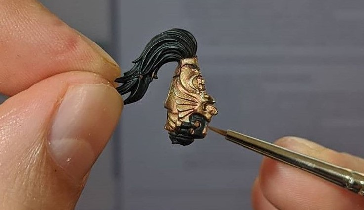
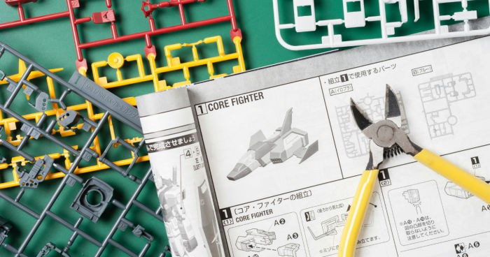

The Smiles Foundation is A charitable organization to provide dental care and oral health education to children in underprivileged communities in the Dominican Republic. I collaborate with the committee’s social media platform to bring public awareness about the need for dental care and to recognize large dental suppliers and private practices for donating supplies or services.

About Me
I have always been interested in technology. This stemmed from playing on revolutionary video games on a beige IBM tower or the 2001 Xbox. In addition, my father being involved in back-end server communications technology definitely had a hand in my tech-savviness. However, I find myself more attuned to use my passion for technology and a fondness for medical science to impact the healthcare field.
I initially pursued an undergraduate degree that developed into a focus on genetics, cancer, and immunology. Through a year long thesis project, I aided in the efforts of finding the genetic causes of a childhood leukemia which led to becoming a young author of published research. However, research is a task where critical thinking is necessary to push past failed perspectives and experiments.
Finding myself running into experimental roadblocks, and a tower of dead cloned E. coli bacteria, I serendipitously found that I could take a more technological approach to my research. I discovered a Python program called PyMOL that could be used to predict and visualize the resulting changes in proteins structure that can occur during cancerous mutations in DNA. It was through reading documentation about PyMOL, learning how to use Linux, and applying these lessons to my research, it was during this challenge that I found that I am meant to take a technological perspective on positively impacting the healthcare of community.
During the past couple years, I have self-assessed my strengths and interest through experimenting and learning computer science and programming. I have perused FreeCodeCamp’s YoutTube videos, Harvard’s CS50, W3School, and countless hours on StackOverflow. Through these, I am constantly learning more about C, HTML, JavaScript, CSS, Flask, Python, Unity, C# and so much more to come. It is this journey of life-long learning that I hope to supplement my life and career with computer science and my life-science background to drive an impact in the HealthTech space.
Volunteering
I am an active volunteer in my community and beyond. It is incredibly important to lead a diverse life in the community. Through my volunteering, I learned to balance a heavy-workload while giving back to those around me. Altruism and community-building through event-planning and/or focusing on community needs is the foundation of my character.
Social Media Specialist
Orthopaedic Research Assistant
At the Orthopaedic Surgery Team of Womens College Hospital I compile data in the investigation of how accessible mobile applications utilizing artificial intelligence can enhance post-operative recovery in hip arthroscopy patients. This research is part of my motivation to impact the healthcare of my community through advancing technology. artificial intelligence is just one way we can improve the healthcare of others.
Elderly Home Exercise Program Support Worker
The Acclaim Health Home Exercise Program is designed to assist and instill confidence and independence of seniors that have trouble with physical disabilities and dementia. Here, I extend my interest in exercise and physical fitness in Western University’s Canadian Centre for Aging and Activity’s standardized exercise program. This one-on-one program is designed to maintain or improve physical function of frail, older adults living in the community to promote independent living.
Halton Multicultural Center
The Halton Multicultural Center aims to provide free services to those who are immigrating as new Canadians or refugees. I Collaborate with a team of volunteers to bring accessible and free services to immigrants by improving English speaking fluency through casual conversation whilst educating about Canadian services, setting goals for career success, and a sense of belonging to the Halton community.
President of the Microbiology & Immunology Student Association
The Microbiology & Immunology Student Association is a non-profit organization that creates a collaborative community to fundraise and provide avenues for academic and research success. I oversaw the needs of the microbiology & immunology student body and lead a team of executives to promote the success of the association and its students.
Residence Orientation Volunteer
The Western University Orientation Program is designed to work with first-year university students in residence communities. each volunteer lives-in and leads a community of 30 to 50 students year-round. As a student leader in this program, I built the foundation of an inclusive and diverse student community in first-year residence through monthly meetings and developing initiatives such as professional development workshops on academics and roommate conflict resolution.
Hobbies

Powerlifting
One extracurricular I enjoy is training as a strength athlete in the sport of powerlifting. Powerlifting is a competitive sport where the athletes try to test their strength, technique, and mentality in three lifts: the squat, bench, and deadlift. Below is a table showing the major muscles involved in each lift. I collaborate with Team Edgley to help achieve our goals through advice, group training, and exercise planning. I have recently competed at the 2021 Ontario Powerlifting Championship and proud to have come so far in my athletic career.
Dragonboating
Another sport I thoroughly enjoy is dragon boating. This sport involves a team of single oar paddlers that take up each side of a very long boat. At the head of the boat is a team member that hits a drum to the tempo at which the team must synchronize their rowing. This sport emphasizes strength in addition to endurance as the races can take up to 15 minutes of constant exertion from paddling. Although I have taken a short reprieve from the sport, I hope to return to it one day.
Would you like to know more?
Warhammer 40,000: Building & Painting
Warhammer painting is something new that ahs come up in my hobby space. Initially I started reading the Warhammer books and delving deep into the lore of this science fiction universe. Later, I started painting the models due to receiving a gift from a friend that contained models, paint, and brushes. Now I paint not only Warhammer, but also Dungeons & Dragons figurines for when I play with my friends on weekends.
Would you like to know more?
Gundam: Building
In addition to Warhammer, I also have built and continue building a Japanese style model called Gundam’s. These models are based on a series of media. Gundam’s are large mechanical humanoid machines that are piloted by humans. The models themselves can range from just 50 pieces to 100’s of pieces involving careful gluing and careful contouring
Would you like to know more?